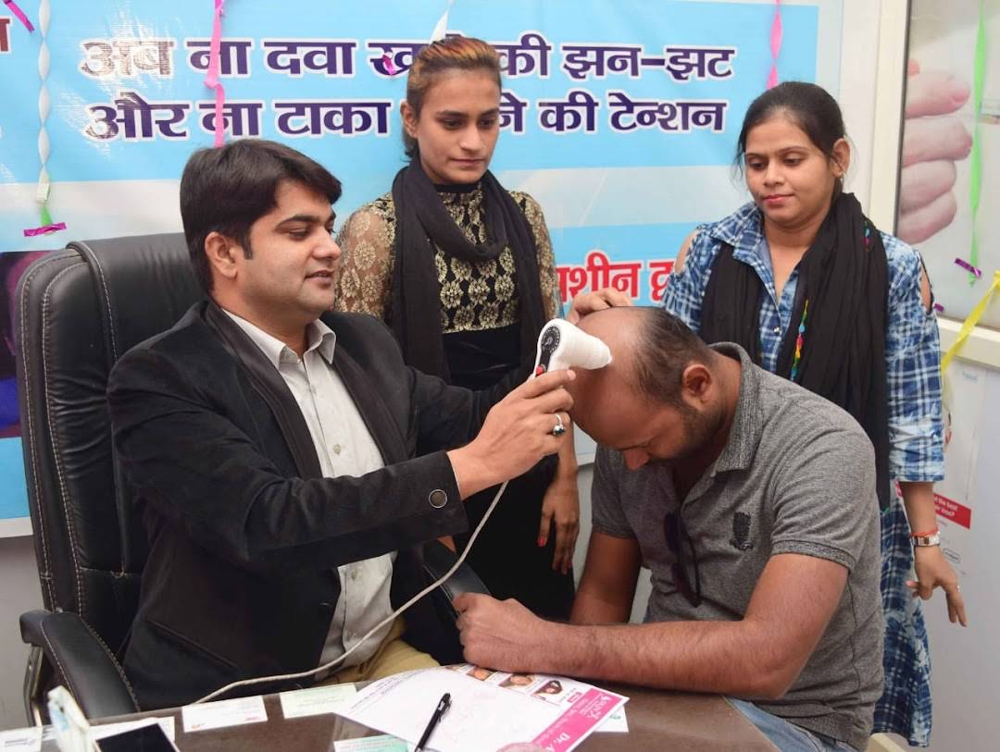

DR. A. KHAN · PRAYAGRAJ
Skin and care.
In Prayagraj.
Book a consultation with Dr. A. Khan for skin, hair and scalp concerns, laser or obesity care. Visit the clinic at Sonal Tower, opposite Axis Bank, Prayagraj.
Dr. A. KhanM.B.B.S., M.D.Meet your doctor
01
A simple start. Send your request on WhatsApp. The clinic will reply to confirm the time and fee.

INSIDE THE CONSULTATION
Your concerns.
A closer look.
Here, Dr. A. Khan examines a patient’s scalp at the clinic. A consultation gives you time to explain what has changed, have your concern examined and ask about the next steps.
Skin concerns, hair and scalp problems, or a follow-up—start by telling the doctor what brings you in.
Plan your consultationSkin · Hair · Laser · Obesity consultationsDiscover our consultations